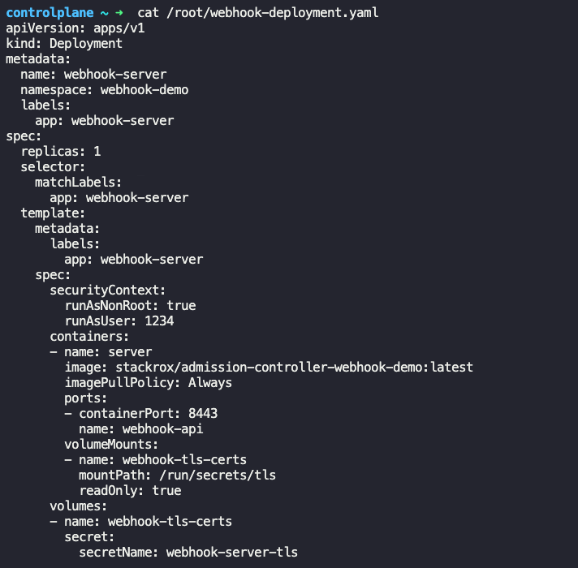

8.2021更新的考试内容
镜像生成¶
当我们在镜像库（比如Dockerhub）中找不到所需的镜像时，我们可以选择自己创建镜像：
Dockerfile文件本质上是一个Docker能够理解的 txt文件。
每行命令都有两个部分组成：<INSTRUCTION> <argument>：
- 我们习惯把命令（
INSTRUCTION）全都大写：比如FROM或RUN <argument>小写。
每一行命令的运行结果都是一个层（layer），每一层的都以上一层的结果为基础，执行命令。假设中途第N层出错，重新创建该镜像时，我们可直接使用N-1层的结果。
FROM ubuntu # 以某个镜像为基础（常见的是“操作系统”镜像）
RUN app-get update # 安装依赖包
RUN apt-get install python
RUN pip install flask
RUN pip install flask-mysql
COPY . /opt/source-code # 复制代码到镜像中
ENTRYPOINT FLASP_APP=/opt/source-code/app.py flask run # 镜像入口/程序启动命令
在Dockerfile所在的文件夹中，用该Dockerfile创建镜像：（-t==--tag给镜像加标签）
docker build -t test/my-custom-image .
docker push test/my-custom-image
运行图像 webapp-color 的实例，并将容器上的端口 8080 发布到主机上的 8282：
docker run webapp-color -p 8282:8080
Note
-p <Host-Port>:<Container-Port>其中，Host（主机）是 Docker 所在的操作系统，即可通过 ssh 进入的系统。 Container-Port 是容器的端口。
检查某个镜像基于的操作系统，可以使用该镜像跑一个容器：
docker run -it --rm <ImageName> /bin/bash
# 进入容器命令行工具之后：
cat /etc/*-release
# 退出容器
exit
--rm
退出容器之后自动将该容器删除
查看当前环境下，镜像python的所有版本
docker images python
k8s 安全性¶
我们知道k8s的集群上有两种Node： Master Node何Worker Node，其中Master Node是一个kube-apiserver服务器。通过对该服务器的访问，我们可以做任何事。那么要如何管理kube-apiserver服务器的 访问权限 呢：
- Authentication：谁可以访问
kube-apiserver服务器？ - Authorization：访问者可以做什么？
1. Authentication¶
谁可以访问集群？想访问集群的有这几种用户：
| 用户 | 功能 | 用户类型 | 帐号类型 | 帐号由谁管理 |
|---|---|---|---|---|
| 管理者 / Admin | 管理集群资源 | 人类 | 用户帐号 / `User` | 帐号由外部资源管理，比如证书，第三方身份认证（LDAP） |
| 开发者 / Developers | 做Deployment，将App建立起来等 | 人类 | 用户帐号 / `User` | 帐号由外部资源管理，比如证书，第三方身份认证（LDAP） |
| 机器人 / Bots | 即用于integration的第三方应用 | 机器人 （第三方进程或服务） |
服务帐号 / `ServiceAcount` | 帐号的管理比较简单，由`Kubernetes`自己管理。 比如: - `k create sa my-sa`新建一个`ServiceAcount` - `k get sa`获取当前集群上所有的`ServiceAcount` |
| 终端用户 / End users | 由App自己管理，比如百度云要用户登陆之后才能访问， 不在kubernetes的管辖范围中，因此不做讨论 |
- | - | - |
用户帐号 / User¶
上面提到的四种用户中的Admin和Developer都属于“用户帐号”类型。而所有的用户都通过kube-apiserver来访问集群，有两种访问方式：
- 通过
kubectl工具 - 通过API：
curl https://kube-server-ip:6443
两种类型的请求都汇集到kube-apiserver服务器。该服务器在处理请求之前对其进行身份验证（Authentication）。我们可以使用不同的 认证机制 / Authentication mechanism 来获得访问权限，比如：
- 用户名 + 密码（Static Password File）
- 用户名 + Token（Static Token File）
- 证书（Certificates）
- 第三方认证服务（Identity Services）：如
LDAP或者Kerberos
认证机制 1：用户名 + 密码¶
1.创建user-details.csv：包含password，username，userid，group（可选），如下：
password123, user1, u0001, group1
password123, user2, u0002, group1
password123, user3, u0003, group2
kube-apiserver服务器的Pod的.spec.containers.command中的--basic-auth-file去，记得确保 重启 kube-apiserver服务器
apiVersion: v1
kind: Pod
metadata:
name: kube-apiserver
namespace: kube-system
spec:
containers:
- command:
- kube-apiserver
- --authorization-mode=Node,RBAC
- --basic-auth-file=user-details.csv # 添加用于basic-auth的csv文件
...
image: k8s.gcr.io/kube-apiserver-amd64:v1.11.3
name: kube-apiserver
volumeMounts:
- mountPath: /tmp/users
name: usr-details
readOnly: true
volumes:
- hostPath:
path: /tmp/users
type: DirectoryOrCreate
name: usr-details
authorization的内容有几种不同的方法：
k describe pod kube-apiserver --namespace kube-systemcat /etc/kubernetes/manifests/kube-apiserver.yamlps aux | grep authorization
3.创建相应的Role和RoleBinding，如下：
---
# 创建Role
kind: Role
apiVersion: rbac.authorization.k8s.io/v1
metadata:
namespace: default
name: pod-reader
rules:
- apiGroups: [""] # 注意 "" indicates the core API group，也可以是"apps"
resources: ["pods"]
verbs: ["get", "watch", "list"]
---
# 创建RoleBinding：允许user1访问"default"的namespace中所有的Pod
kind: RoleBinding
apiVersion: rbac.authorization.k8s.io/v1
metadata:
name: read-pods
namespace: default
subjects: # subjects：实现了 RoleBinding 和 User 之间的绑定
- kind: User
name: user1
apiGroup: rbac.authorization.k8s.io
roleRef: # roleRef（也叫Account）：实现了 RoleBinding 和 Role 之间的绑定
kind: Role # 也可以是ClusterRole
name: pod-reader
apiGroup: rbac.authorization.k8s.io
⚠️ User名字区分大小写！
4.然后我们就通过 用户+密码 对集群进行访问了，比如通过API请求：
curl -v -k https://master-node-ip:6443/api/vi/pods -u "user1:password123"
Note
-v: verbose，输出所有警告或错误信息
-k: 省略curl的安全检测步骤
认证机制 2：用户名 + Token¶
- 与 认证机制1 中类似，创建
user-token-details.csv文件，举例：KfhuSDbdFafJrenu732hb42, user1, u0001, group1 skjdhfue2kUKfhuSDbds7sjh, user2, u0002, group1 TmjfIG6aHW34jndjushdDUI, user3, u0003, group2 - 配置
kube-apiserver服务器的Pod：用--token-auth-file而不是--basic-auth-file - 添加相应的
Role和RoleBinding - 最后可用
curl访问：curl -v -k https://master-node-ip:6443/api/vi/pods -u "Bearer KfhuSDbdFafJrenu732hb42"
Warning
- 不建议在生产环境中这样做。认证机制1和2仅用于学习和理解。
- 认证机制1和2已在Kubernetes 1.19版本中已被废弃，在以后的版本中也不再适用！
认证机制 3：证书 / Certificates¶
证书 / Certificates的生成不在CKAD，而是在CKA的考试范围中，因此省略。这里假设证书已生成。可以通过API或者k工具进行使用：
# 用`API`：
curl https://my-kube-playground:6443/api/v1/pods \
--key admin.key
--cert admin.crt
--cacert ca.crt
Note
--key: (TLS) your private key for SSH--cert: (TLS) specified client certificate file--cacert: (TLS) to use the specified certificate file to verify the peer. CA = certificate authority
# 用`kubectl`工具：
kubectl get pods \
--server my-kube-playground:6443 \
--client-key admin.key \
--client-certificate admin.crt
--certificate-authority ca.crt
我们可以简化kubectl的使用，因为每次输入这么长的命令有点麻烦。这时候就要用到KubeConfig文件了，我们可以生成一个KubeConfig文件，然后再用kubectl+KubeConfig访问Pod：
kubectl get pods --kubeconfig config
KubeConfig文件：$HOME/.kube/config，如果我们也把我们的KubeConfig文件放在了这个默认路径中，那么我们只需要跑 k get pods即可！
Note
$HOME是一个变量，其值可以通过echo $HOME查看
那么KubeConfig文件长啥样呢？它由三个 列表 组成：
UsersClustersContexts
他们之间的关系是Clusters x Users = Contexts如图：
举例：
# 举例：每个列表（`Users`，`Clusters`和`Contexts`）中包含一个item
apiVersion: v1
kind: Config
current-context: my-kube-admin@my-kube-playground # 当前使用的context，可通过kubectl修改
clusters: # clusters列表
- name: my-kube-playground
cluster:
certificate-authority: etc/kubernetes/pki/ca.crt
server: https://my-kube-playground:6443
contexts: # contexts列表
- name: my-kube-admin@my-kube-playground
context:
cluster: my-kube-playground
user: my-kube-admin
namespace: default # 可选
users: # users列表
- name: my-kube-admin
user:
client-certificate: etc/kubernetes/pki/admin.crt
client-key: etc/kubernetes/pki/admin.key
Warning
- 该文件没有生成任何额外的k8s资源，只是负责把已有的资源利用和链接起来了
- 该文件 写完+保存 即可，不需要
k create -f .....yaml来生成！！
查看正在使用的KubeConfig文件：
# 查看默认文件路径下的KubeConfig，或者直接查看文件： $HOME/.kube/config
kubectl config view
# 查看某个特定的KubeConfig
kubectl config view --kubeconfig=my-customized-config
用自定义的KubeConfig文件代替默认的：
# 直接用customized的`KubeConfig`文件内容 取代默认的路径下的：
mv /directory/to/my/config $HOME/.kube/config
修改当前正在使用的Context，该命令会自动更新KubeConfig文件中的.current-context
# 使用默认路径下的KubeConfig文件
kubectl config use-context <Context-Name>
# 使用自定义的KubeConfig文件
kubectl config use-context <Context-Name> --kubeconfig=<New-KubeConfig-File>
Config的YAML文件
.clusters.cluster.certificate-authority: 文件路径.clusters.cluster.certificate-authority-data: 加密后的文件内容
两者能达到一样的目的！比如我们先对ca.crt文件进行加密：cat ca.crt | base64 ，再把加密后的内容加到 .clusters.cluster.certificate-authority-data:里去
2. Authorization：访问者可以做什么？¶
访问者可以做什么由 授权机制 / Authorization mechanism 决定。比如给管理者/Admin和开发者/Developer的权限肯定是不一样的。常见的 授权机制 有：
- Node Authorizor
- ABAC授权（Attributed-based access control）
- RBAC授权（Role-based access control）： 关联 用户 与 权限组
- Webhook Mode
AlwaysAllowAlwaysDeny
使用哪一种授权机制由kube-apiserver的Pod文件上配置--authorization-mode=决定。多种机制可同时使用，只需用逗号隔开即可。多个机制之间是”或“的关系，只要有一个机制认可即可，用户请求会被所有授权机制按 从左到右的顺序 检查。比如：
# 外部用户访问时：
# 先由检查Node检查，被拒绝，
# 用RBAC检查通过了！用户的请求被redirect到`kube-apiserver`
# Webhook不需要再检查
--authorization-mode=Node,RBAC,Webhook
授权机制 1：Node Authorizor¶
集群内 的其他Node（带有kubelet）访问kube-apiserver服务器时，也需要Authorization - Node Authorizor。 kubelet作为系统节点组的一部分，有一个以系统节点为前缀的名字：system.node.node01
授权机制 2：ABAC¶
比如dev用户需要查看、创建和删除pod的权限。我们通过一个Policy文件来做到这一点，并将文件传输给kube-apiserver服务器。ABAC管理困难，因为需要手动修改Policy文件，并且每修改一次就要重启一次kube-apiserver服务器。
授权机制 3：RBAC¶
通过创建不同的Role（比如Developer，Admin能做的事情不一样），并将User关联到所需的Role上
-
新建
Role：.rules.verbs表示该apiGroup可以执行的动作apiVersion: rbac.authorization.k8s.io/v1 kind: Role metadata: namespace: default # 可选 name: developer rules: # rule nr.1: - apiGroups: [""] # "" indicates the core API group resources: ["pods"] # 针对pod资源 verbs: ["list", "get", "create", "update", "delete"] resourceNames: ["blue", "red"] # 可选，用pod的名称进行筛选 # rule nr.2: - apiGroups: [""] resources: ["ConfigMap"] # 针对ConfigMap资源 verbs: ["create"] -
用
RoleBinding将User关联到Role上apiVersion: rbac.authorization.k8s.io/v1 kind: RoleBinding metadata: namespace: default # 可选 name: devuser-developer-binding subjects: - kind: User # 或者 kind: Group name: dev-user # "name"区分大小写 apiGroup: rbac.authorization.k8s.io roleRef: # 指定与之绑定的Role kind: Role # 或者ClusterRole name: developer apiGroup: rbac.authorization.k8s.io
Note
Role和Rolebinding都可以被限制在某个namespace上，我们可以在yaml中的.metadata.namespace中写明
关于Role和RoleBinding的一些命令
# 新建role
kubectl create role [roleName] --verb=[actionA],[actionB] --resource=pods
# 查看所有的`Role` (用--namespace xxx或 --all-namespace（-A）来限定)
kubectl get roles
# 查看某个`Role`的权限
kubectl describe role developer
# 新建rolebinding
kubectl create rolebinding NAME --clusterrole=NAME|--role=NAME [--user=username] [--group=
# 查看所有的`RoleBinding`
kubectl get rolebindings
# 查看某个`RoleBinding`的内容
kubectl describe rolebinding devuser-role-binding
# 查看 当前用户（我） 是否有某个权限：
kubectl auth can-i create deployments
kubectl auth can-i delete nodes
# 查看名为 dev-user 的用户是否有某个权限：（在某个namespace中）
kubectl auth can-i create deployments —-as dev-user
kubectl auth can-i delete nodes —-as dev-user —-namespace test
Role vs ClusterRole
Kubernetes中有Role和ClusterRole，ClusterRole是跨Namespace的存在，ClusterRole和ClusterRoleBinding的创建方法与Role类似。使用Role还是ClusterRole由使用场景决定
授权机制 4：Webhook¶
从集群外部对Authorization进行管理，比如Open Policy Agent，会在收到请求后判断发送请求的用户是否有执行该动作的权利，如果有，才会redirect该请求到kube-apiserver服务器上
3. 集群内部的交流¶
集群内部的组件（比如etcd，kube controller， manager scheduler和API server）与kube-apiserver服务器之间的交流都是由 TLS 加密过的。同一个集群上的不同Pod（上面的app）默认可以互相访问。如果有需要，我们可以通过 NetworkPolicy 来限制访问权限。
4. Admission Controller¶
除了以上提到的Authentication和Authorization两个机制之外，kubernetes还提供了Admission Controller， 来控制一些Authentication和Authorization无法控制的东西，比如：
- 只允许使用某个registry（即镜像数据库）中的镜像
- 不允许用户作为root跑Pod
- 规定Pod必须有labels
查看当前启用的Admission Controller：进入容器 kube-apiserver-controlplane中并用kube-apiserver命令查看
k exec kube-apiserver-controlplane -n kube-system -- \
kube-apiserver -h | grep enable-admission-plugins
Warning
kube-apiserver-controlplane 是一个在 Namespace kube-system中的Pod，而进入该Pod中的容器之后，我们才可以使用 kube-apiserver 命令工具～
修改Admission Controller：
vi /etc/kubernetes/manifests/kube-apiserver.yaml
# 在yaml的.spec.containers.command中:
# 1）添加
- --enable-admission-plugins=NamespaceAutoProvision
# 2）删除
- --disable-admission-plugins=NamespaceAutoProvision
Note
NamespaceExists和NamespaceAutoProvision已经被弃用，用NamespaceLifecycle代替：
- Namespace不存在时拒绝执行命令
- 确保默认的Namespace无法被删除：
default,kube-system和kube-public
k8s提供的AC类型¶
1. Validating AC（验证类）¶
比如NamespaceExists 和 NamespaceAutoProvision，以下面命令为例：
kubectl run nginx --image nginx --namespace blue
- AC
NamespaceExists默认为启用状态，并且会检查命令中提到的Namespaceblue是否存在，如果不存在，该命令会报错。 - AC
NamespaceAutoProvision默认为关闭状态，若启用，则在Namespaceblue不存在的情况下会自动生成一个
2. Mutating AC（修改类）¶
DefaultStorageClass 这个AC会观察 对存储类没有特定要求 的 PersistentVolumeClaim 的创建，并自动向它们添加默认存储类。
当我们查看创建的PVC时，我们可以看到该PVC的属性StorageClass: default
AC执行顺序
k8s先使用Mutating再使用Validating的AC
自定义Admission Controller¶
我们也可以自己定义Admission Controller，需要用到的工具有：
- Mutating Admission Webhook
- Validating Admission Webhook
通过下面两个步骤实现：
- 建立服务器
Admission Webhook Server（以Deployment的形式）

- 建立服务
- 用
ValidatingAdmissionConfiguration或者MutatingAdmissionConfiguration进行配置。举例：
apiVersion: admissionregistration.k8s.io/v1
kind: ValidatingWebhookConfiguration
metadata:
name: "pod-policy.example.com"
webhooks:
- name: "pod-policy.example.com"
clientConfig:
service: # 服务器：通过服务访问
namespace: "example-namespace"
name: "example-service"
caBundle: <CA_BUNDLE> # certificate bundle for TLS
rules: # 规定什么时候使用自定义AC
- apiGroups: [""]
apiVersions: ["v1"]
operations: ["CREATE"]
resources: ["pods"]
scope: "Namespaced"
admissionReviewVersions: ["v1"]
sideEffects: None
timeoutSeconds: 5
上面的例子中，Server也在同一个k8s cluster上，我们用一个service去访问该服务器。如果Server也在cluster外的话， clientConfig长这样：
clientConfig:
uri: "https://my-server.com"
Namespaces¶
kubernetes中有分Namespace和不分Namespace的资源：
| 分Namespace | 不分Namespace |
|---|---|
| pods，replicasets，jobs，deployments， services，secrets，roles，rolebindings， configmaps，PVC |
nodes，PV，clusterroles， clusterrolebindings，certificatesigningrequests， namespaces |
k api-resources --namespaced=true |
k api-resources --namespaced=false |
可用kubectl api-resources结果中的NAMESPACED列查看，如下：
API Groups¶
Kubernetes的 Endpoints 根据其目的不同，被分到不同的API组中。API组在两个地方用到：
- REST路径：
/apis/$GROUP_NAME/$VERSION - yaml文件中apiVersion的值：
apiVersion: $GROUP_NAME/$VERSIO，比如apiVersion: batch/v1
Warning
/api 组做为最早，最核心的组，组名总是被省略，比如Pod的apiVersion: v1而不是apiVersion: api/v1
常用的API组有：
/api也叫core组，或者legacy组/apis也叫named组/metrics/healthz/version/logs
查看 API组及其版本：
k api-versions
其中与集群作用相关的是core组和named组，结构分别为：
core组 （/api） |
named组（/apis） |
|---|---|
 |
Note
注意/apis结构更加整洁，/api组中的Endpoints也会在未来慢慢地被移动到/apis组中！
（图片来自这里）
API的使用¶
# 查看当前cluster中所有可用的API组：
curl https://kube-master:6443 -k
# 查看某API组中所有可用的Resources
curl https://kube-master:6443/apis -k
某些API是需要身份验证之后才能被使用。有两种方法：
1.使用curl的参数（比如--key）
curl https://kube-master:6443 -k \
--key admin.key
--cert admin.crt
--cacert ca.crt
2.使用Kube Control Proxy程序查看 API组
# Kube控制代理命令启动了一个代理服务，并使用凭证和证书，端口为8001，效果等同于k proxy
k proxy 8001&
# proxy建立成功后，你会看到这条信息：Starting to serve on 127.0.0.1:8001
# 现在可以直接访问端口8001了，不需要certificates
curl localhost:8001 -k
Warning
k proxy和kube proxy是两个不同的东西！TODO
API组的版本¶
有些API组有多个版本，比如v1，v1alpha1。我们可以通过proxy然后用REST访问查看
k proxy 8001&
curl https://localhost:8001/apis/<API-Group>
# 比如，查看`batch`组的所有版本：
curl https://kube-master:8001/apis/batch
preferredVersion（推荐版本）是默认使用的版本
或者用更简单的：
k api-versions | grep batch
除了资源的推荐版本，也可能存在一个存储版本/storage version。是指最终存储到etcd数据库中的版本，假设该存储版本存在，则资源再存储时，都会先被转换成存储版本。
存储版本没有办法通过k查看，我们可以直接查询etcd数据库，比如：
ETCDCTL_API=3 etcdctl
--endpoints=https://[127.0.0.1]:2379
--cacert=/etc/kubernetes/pki/etcd/ca.crt
--cert=/etc/kubernetes/pki/etcd/server.crt
--key=/etc/kubernetes/pki
get "/registry/deployments/default/blue" --print-value-only
Note
推荐版本 和 存储版本 都各自存有一个值，这个值可能是相同的，也有可能是不同的
启用/禁用API版本¶
需要修改Pod kube-apiserver-controlplane的配置，最直接的方法是修改/etc/kubernetes/manifest/api-server.yaml文件：
# 万一修改出错，cluster会崩坏，以防万一，先放一个备份
cp /etc/kubernetes/manifests/kube-apiserver.yaml /root/kube-apiserver.yaml.backup
vi /etc/kubernetes/manifests/kube-apiserver.yaml
# 在spec.containers[0].command中
# 添加版本：
--runtime-config=batch/v2alpha1,v2,v2beta1
# 删除某版本:
--runtime-config=batch/v1=false
接下来要等该Pod被重启，确定Pod处于运行状态，修改才真正被实现！
API更新准则¶
1.API 元素只能通过增加 API 组的版本来删除
v1alpha1(有"test"资源)=> v1alpha2(无"test"资源)
v1alpha1 <==> v1alpha2之间可以无缝转换
API弃用准则¶
1.除了最新 API 版本之外，较旧的 API 版本在宣布弃用一段时间后必须得到支持。
- GA：不少于 12 个月或 3 次release
- beta（测试版）：不少于 9 个月或 3 次release
- alpha：0 release -> 弃用之后不需要额外支持，所以当kubernetes版本升级，且不再包含某个资源的
v1alpha1版本后，我们需要把该资源的版本都升级到v1alpha22.在发布新的 推荐版本 和 存储版本 之前，要至少存在过一个release，旧的和新的两个版本都被支持。换句话说，第一次发布的版本，不能成为 推荐版本 或 存储版本 - 在新的 API 版本发布之前，给定轨道中的 API 版本可能不会被弃用，至少发布稳定版本。
API版本发展¶
版本的发展历史大概是这样的：
v1alpha1 => v1alpha2 => v1beta1 => v1 GA版本（General Availability）
当产品达到 GA 时，它可以通过公司的一般销售渠道获得，而不是用于测试和用户反馈的 有限版本 或 测试版。
我们可以用以下命令更新资源使用的版本：
kubectl convert -f <old-yaml-file> --output-version <new-api>
# 举例：把一个名为 nginx 的Deployment资源从版本 `apps/v1beta1` 更新到 `apps/v1`
# 该命令会输出一个新的yaml格式的定义
kubectl convert -f nginx-old.yaml --output-version apps/v1 > nginx-new.yaml
Warning
k convert可能并不是默认可用的，它是一个额外的插件，需要自己安装，教程在这里
1.下载binary文件curl -LO "https://dl.k8s.io/release/$(curl -L -s https://dl.k8s.io/release/stable.txt)/bin/linux/amd64/kubectl-convert"
2.给binary文件可执行的权限：chmod +x kubectl-convert
3.将binary文件移动到bin文件夹下mv kubectl-convert /usr/local/bin
4.现在可用使用：k-convert --help
Note
Kubernetes API versions 是Kubernetes本身的版本，大概长这样：1.22.2，数字分别代表：
- 1: 主版本 / major version
- 22: 次要版本 / minor version
- 2: 补丁版本 / patch version
自定义资源¶
我们都知道新建一个Deployment会自动生成对应的Pod，这个过程由k8s自带的的Controller控制，拥有类似的Controller的还有ReplicaSet，Deployment，Job，Cronjob，Statefulset，Namespace。
如果我们想要自定义一个资源，那么我们可能要建立两样东西：
1.Resource, 这里yaml文件要包含apiVersion，kind，metadata和spec，但kind值可以自定义。举例：
# flightticket.yaml
apiVersion: flights.com/v1
kind: FlightTicket
metadata:
name: my-flight-ticket
spec:
from: Mumbai
to: London
number: 2
CustomResourceDefinition
# flightticket-custom-definition.yaml
apiVersion: apiextensions.k8s.io/v1
kind: CustomResourceDefinition
metadata:
name: flighttickets.flights.com # =spec.names.plural+"."+spec.group
spec:
scope: namespaced # 可以是namespaced或者cluster
group: flights.com # API组，是Resource中apiVersion的值
names:
kind: FlightTicket # Resource 名，是Resource中kind的值
singular: flightticket
plural: flighttickets
shortNames:
- ft
versions:
- name: v1
served: true # apiserver用的版本，so that it’s being served via REST API. preferred version？
storage: true # storage version
schema:
openAPIV3Schema: # shema定义了新建该Resource中spec的值
type: object
properties:
spec:
type: object
properties:
from:
type: string
to:
type: string
numer:
type: integer
minimum: 1
maximum: 10
3.自定义控制器（Controller）
Controller负责监视资源FlightTicket的状态，更新及删除，并在FlightTicket被创建的时候调用订飞机票的API（比如https:book-flight.com/api）。理论上Controller可以用任何编程语言书写，但Go有一个 Kubernetes Go Client，里面有写Controller所需的包，比如缓存和队列机制，模版在这里。
git clone https://github.com/kubernetes/sample-controller.git
cd sample-controller
vi controller.go # 修改文件
go build -o sample-controller . # 编译文件
./sample-controller -kubeconfig=$HOME/.kube/config # 运行文件，将`$HOME/.kube/config`做为参数穿进去
controller.go源码大概长这样：
package flightticket
var controllerKind = apps.SchemeGroupVersion.WithKind("FlightTicket") ...
func (dc *FlightTicketController) callBookFlightAPI( ...
我们一般把Controller打包到Docker镜像中，并在一个Pod中运行。
4.用kubectl create -f创建 CRD文件 和 Resource文件
k create -f flightticket-custom-definition.yaml
k create -f flightticket.yaml
k get flightticket
Deployment Strategies¶
我们之前讨论过两个Deployment Strategies，然而还有更多的Strategies：
RollingUpdate：（默认的Strategy）关一个旧的Pod，新建一个新的Pod，以保证用户用永远可以访问到Recreate：关闭所有旧Pod，然后在建立新PodBlue/Green：旧Pod是Blue组，新Pod是Green组，先做测试，将用所有的traffic都导到Blue上去，当测试通过后，所有traffic都改到Green组上去。Canary：在该Strategies中，新旧Pod也同时存在，然而，大部分traffic还是访问旧Pod，只有一小部分traffic访问新Pod
Blue/Green¶
该Strategy其实可以通过Istio更轻松地实现，但我们这里先不使用Istio这个额外的工具。k8s自己可以实现Blue/Green，分成两步：
1.通过Service访问Blue组：
... # Service: svc.yaml
spec:
selector:
version: v1
...
spec: # Deployment: blue.yaml
template:
metadata:
name: myapp-pod
labels:
version: v1
selector:
matchLabels:
version: v1
...
spec: # Deployment: green.yaml
template:
metadata:
name: myapp-pod
labels:
version: v2
selector:
matchLabels:
version: v2
... # Service: svc.yaml
spec:
selector:
version: v2
Canary¶
在该Strategies中，新旧Pod也同时存在，然而，大部分traffic还是访问旧Pod，只有一小部分traffic访问新Pod，这个过程相当于在做测试。当测试通过之后，再把旧的Pod都取代掉（比如用RollingUpdate）。
实现方法：用同一个Service访问新旧两个Deployment（用一个两个Deployment中都存在的label即可），但是新旧两个Deployments中的Pod数量不同：
- 旧Deployment有5个Pods
- 新Deployment只有1个Pod
Warning
通过减少Pod的数量减少traffic，是因为Service对每个Pod的访问都是随机的，并不是以Deployment为单位来进行traffic的分配！！
Note
k8s中我们无法非常精确的控制traffic的百分比，但Istio可以，比如99%的traffic访问旧Pod，1%访问新Pod
Helm Chart¶
k8s有太多Resource了，我们经常需要给每个Resource写一个Yaml文件，然后分别用k create -f xxx.yaml来创建这些Resource的对象。修改和删除更是需要手动完成，比如我要shopify网站就会非常复杂。
Helm解决了这个难题，我们可以把它当作Kubernetes的package manager，它把所有Resource的对象都打包了，现在我们只需要告诉Helm，我要使用package shopify即可：
Helm将普通yaml文件结构成 模版文件+变量文件。
常用命令：¶
helm version
helm list
# 下载但是不安装
helm pull shopify
helm pull --untar shopify # 解压
# 自定义/修改：
ls shopify
helm install new-shopify ./shopify
# 下载Chart并使用
helm install <AppName> <RepoName>/<ChartName>
helm install my-shop bitnami/shopify
# 更新
helm upgrade shopify
helm rollback shopify
helm uninstall my-shop
# 在默认的Chart数据库（hub）中搜索：https://artifacthub.io/
helm search hub shopify
# 添加额外数据库
helm repo add bitnami https://charts.bitnami.com/bitnami
# 在额外的Chart数据库（repo）中搜索
helm search repo shopify
# 查看已添加的额外数据库
helm repo list
在Linux上安装¶
curl -fsSL -o get_helm.sh https://raw.githubusercontent.com/helm/helm/main/scripts/get-helm-3
chmod 700 get_helm.sh
./get_helm.sh
其他¶
| 命令 | 描述 |
|---|---|
k get clusterrole --no-headers | wc -l |
数结果有几个（没有表头） |
k api-resources |
查看资源的全称，缩写，api版本，是否namespaced，以及Kind的值 |
ls /etc/kubernetes/manifests |
输出结果： etcd.yaml kube-apiserver.yaml kube-controller-manager.yaml kube-scheduler.yaml |
cat /etc/os-release |
查看当前OS系统 |